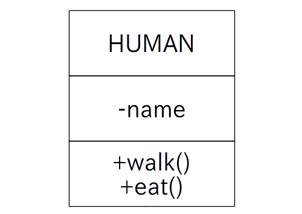

演習時間: 145 分
演習 1-1 (チーム、10 分): クラス図を画像検索して見てみましょう。
メンバーは各自「クラス図」で画像検索します。
世の中には色んなクラス図があることを確認します。
どのクラス図を提出するかチーム内で話し合い、代表者はその画像をダウンロードします。
代表者は指定場所に「画像ファイル」を貼り付けて下さい。
演習 1-2 (個人、15 分): 単一クラス図を描いてみましょう。
オブジェクト指向プログラミングの三大要素の演習で作成したプロジェクトOELM-3-3を開いて下さい。
Libreoffice Draw 等のドローツールを起動します。
Score スーパークラスのクラス図を描いて下さい。フィールドの型、メソッドの戻り値、メソッドの引数、コンストラクタや getter/setter は省略して構いません。
「CDIAG-1-2」の名前で保存して下さい。
チーム内で答え合わせをし、代表者は提出用に画像ファイルとして保存して下さい。
代表者は指定場所に「画像ファイル」を貼り付けて下さい。
演習 1-3 (個人、15 分): 汎化のクラス図を描いてみましょう。
引き続きプロジェクト OELM-3-3 のクラス図を作成します。
「CDIAG-1-2」をコピーして「CDIAG-1-3」に名前を変えて下さい。
「CDIAG-1-3」を開いて下さい。
Score 、Taro、Hanako、Jiro の関係を示すクラス図を描いて下さい。
上書き保存して下さい。
チーム内で答え合わせをし、代表者は提出用に画像ファイルとして保存して下さい。
代表者は指定場所に「画像ファイル」を貼り付けて下さい。
演習 1-4 (個人、15 分): テキストの例で挙げたクラス図を完成版に仕上げましょう。
Libreoffice Draw 等のドローツールを起動します。
テキストの図 3 をドローツールで描きます。
ORANGE は FRUIT を継承して出来ているという情報が抜けていますので、FRUIT クラスと汎化の矢印を図に追加します。
「CDIAG-1-4」の名前で保存して下さい。
チーム内で答え合わせをし、代表者は提出用に画像ファイルとして保存して下さい。
代表者は指定場所に「画像ファイル」を貼り付けて下さい。
演習 1-5 (個人、20 分): クラス図「CDIAG-1-4」を元にコーディングしてみましょう。
新規のJavaプロジェクトを作ります。プロジェクト名は「CDIAG-1-5」とします。
まずテキストに従って FRUIT、ORANGE、MyWorld のコードを作成します。
MyWorld にあるフィールド orange0〜3 は private のためこのままではアクセス出来ないので、orange0〜3 の getter (名前は get_orange0〜3) を MyWorld に追加します。
以下の main メソッドを持つ Main クラスを作って下さい。
public static void main(String[] args) {
MyWorld myworld = new MyWorld();
myworld.get_orange0().show();
myworld.get_orange1().show();
myworld.get_orange2().show();
myworld.get_orange3().show();
}
実行します。
チーム内で答え合わせをし、提出用のソースコード(MyWorld)を選んで下さい。
指定場所に「ソースコード」と「実行結果」を記入して下さい。
演習 1-6 (個人、20 分): プロジェクト「CDIAG-1-5」において、 MyWorld で ORANGE クラスのフィールド orange0〜3 を使っているのはダサいので、ポリモーフィズムを使ったコードに変えてみましょう。
プロジェクト「CDIAG-1-5」を丸ごとコピーし、名前を「CDIAG-1-6」とします。
ORANGE クラスのフィールド orange0〜3 を MyWorld から削除し、代わりに FRUIT クラスの配列 private FRUIT fruit[]; に置き換えます。
getter もなるべく使いたくないのでついでに取り除きます。orange0〜3 の getter を MyWorld から削除し、代わりに次の public な act メソッドを MyWorld に追加します。
public void act()
{
for(int i = 0; i < 4; ++i ) fruit[i].show();
}
MyWorld のコンストラクタで長さ 4 の FRUIT 配列を new し、ORANGE のインスタンスを new して 各 fruit[] に代入します。
main メソッドを以下に置き換えて下さい。
public static void main(String[] args) {
MyWorld myworld = new MyWorld();
// ※ (この行は演習1-10で使います)
myworld.act();
}
実行します。
チーム内で答え合わせをし、提出用のソースコード(MyWorld)を選んで下さい。
指定場所に「ソースコード」と「実行結果」を記入して下さい。
演習 1-7 (個人、10 分): プロジェクト「CDIAG-1-6」に APPLE クラスも追加してみましょう。
プロジェクト「CDIAG-1-6」を丸ごとコピーし、名前を「CDIAG-1-7」とします。
以下の APPLE クラスをプロジェクトに追加します。
public class APPLE extends FRUIT{
public APPLE( int no ) // コンストラクタ
{
set_name( "りんご No." + no );
}
}
MyWorld のコンストラクタで長さ 4 の FRUIT 配列を new し、fruit[0] と fruit[1] に ORANGE のインスタンス( No は 0 と 1 )、fruit[2] と fruit[3] に APPLE のインスタンス( No は 0 と 1 ) を new して代入します。
実行します。
チーム内で答え合わせをし、提出用のソースコード(APPLE, MyWorld)を選んで下さい。
指定場所に「ソースコード」と「実行結果」を記入して下さい。
演習 1-8 (個人、10 分): クラス図を見て新規クラスを追加してみましょう。
プロジェクト「CDIAG-1-7」を丸ごとコピーし、名前を「CDIAG-1-8」とします。
以下の HUMAN クラスをプロジェクトに追加します。name は String 型で中身は空で結構です。walk、eat メソッドは void 型で、メソッド内で適当な文字列を表示させて下さい(ただし name を含むこと)。

HUMAN を継承した TARO クラスと HANAKO クラスもプロジェクトに追加して下さい。またコンストラクタで name をセットして下さい。
MyWorld のフィールドに HUMAN 配列 human[] を追加し、MyWorldの コンストラクタで長さ 2 の HUMAN 配列 を new し、human[0] に TARO、 human[1] に HANAKO のインスタンスを new して代入します。
MyWorld の act メソッドを以下のように修正します。
public void act()
{
for(int i = 0; i < 2; ++i ){
human[i].walk();
human[i].eat();
}
for(int i = 0; i < 4; ++i ) fruit[i].show();
}
実行します。
チーム内で答え合わせをし、提出用のソースコード(HUMAN, TARO, HANAKO, MyWorld)を選んで下さい。
指定場所に「ソースコード」と「実行結果」を記入して下さい。
演習 1-9 (個人、15 分): プロジェクト「CDIAG-1-8」のクラス図を描いてみましょう。
「CDIAG-1-4」をコピーして「CDIAG-1-9」に名前を変えて下さい。
「CDIAG-1-9」を開いて下さい。
プロジェクト「CDIAG-1-8」のクラス図を描いて下さい。
上書き保存して下さい。
チーム内で答え合わせをし、代表者は提出用に画像ファイルとして保存して下さい。
代表者は指定場所に「画像ファイル」を貼り付けて下さい。
演習 1-10 (個人、15 分): プロジェクト「CDIAG-1-8」のオブジェクト図を描いてみましょう。
Libreoffice Draw 等のドローツールを起動します。
プロジェクト「CDIAG-1-8」を実行し、main メソッドの※の行まで来た時点におけるオブジェクト図を描いて下さい。
「CDIAG-1-10」の名前で保存して下さい。
チーム内で答え合わせをし、代表者は提出用に画像ファイルとして保存して下さい。
代表者は指定場所に「画像ファイル」を貼り付けて下さい。